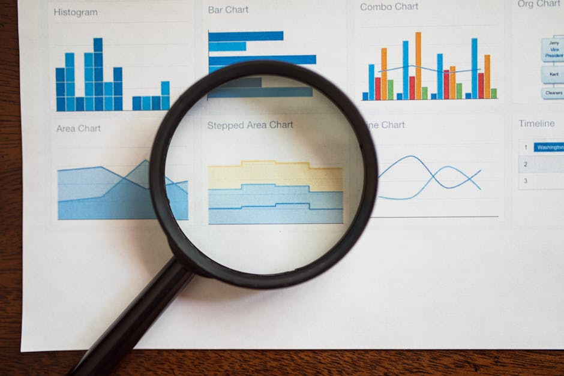

Slack revolutionized team chat, but does it hold up against growing competition? This review examines its core features, pricing, and place in today's collaborative landscape.
By Upingi Team / Published on May 30, 2024
What is Slack?
Slack is a pioneering, channel-based messaging platform specifically engineered for workplace communication and collaboration. Launched in 2013, it fundamentally shifted how many teams interact, moving away from traditional email threads towards more dynamic, organized conversations. Its core concept revolves around "channels," which act as dedicated spaces for specific projects, teams, topics, or even social interests, ensuring discussions remain focused and easily searchable. Beyond simple text chat, Slack integrates real-time messaging with robust file sharing capabilities, allowing users to easily drag-and-drop documents, images, and code snippets directly into conversations. It incorporates native voice and video calling (Huddles) for quick discussions, reducing the need to switch to separate conferencing tools for impromptu meetings. Perhaps its most significant differentiator is its vast ecosystem of integrations; Slack connects seamlessly with hundreds, if not thousands, of third-party business applications like Google Workspace, Microsoft 365, Asana, Jira, Zoom, Salesforce, and countless others. This allows teams to centralize notifications, automate workflows, and access information from various tools directly within the Slack interface, positioning it as a central hub for digital teamwork rather than just a chat application.
Key Features

- Channels: The foundation of Slack. Create public or private channels for projects (#project-alpha), teams (#design-team), topics (#marketing-campaigns), or anything else. This keeps conversations organized, searchable, and prevents information silos often seen with email chains. Users can join/leave public channels as needed.
- Direct Messages & Huddles: For private one-on-one or small group conversations, Direct Messages (DMs) provide a dedicated space. Huddles offer spontaneous, lightweight audio (and optionally video) calls directly within a channel or DM, perfect for quick clarifications without scheduling a full meeting.
- Search: Slack boasts powerful search capabilities, indexing all messages and file contents (including PDFs, documents). Advanced search operators allow users to filter by sender, channel, date range, and keywords, making it relatively easy to find past information even in busy workspaces.
- Integrations & Apps: A massive library in the App Directory allows connecting Slack to virtually any other tool your team uses (Google Drive, Asana, Jira, GitHub, Zoom, Salesforce, etc.). Receive notifications, trigger actions, and share information across platforms directly from Slack, reducing context switching.
- Workflows (Workflow Builder): Automate routine tasks and processes using a visual, no-code builder. Create custom workflows for things like onboarding new team members, requesting approvals, collecting feedback via forms, or sending scheduled reminders, improving efficiency.
- Slack Connect: Securely extend channel-based communication to external organizations, partners, clients, or vendors. This allows seamless collaboration with outside parties within the familiar Slack interface, replacing potentially insecure email chains for inter-company projects.
- File Sharing & Storage: Easily share various file types directly in channels or DMs. Files are archived and searchable. Storage limits depend on the pricing plan, with paid plans offering significantly more space per user.
- Notifications & Customization: Granular control over notifications allows users to manage distractions. Customize notifications per channel, set keywords for alerts, utilize Do Not Disturb modes, and configure preferences for desktop, mobile, and email alerts.
User Interface and Ease of Use
Slack's interface is generally considered clean and user-friendly, especially for those familiar with chat applications. The multi-column layout (sidebar for channels/DMs, main chat pane, optional details pane) is logical. However, the sheer density of features and the potential for a high volume of channels and messages can sometimes feel overwhelming for new users or in very large organizations. Onboarding requires understanding channels, threads, and notification settings to avoid information overload. The desktop applications (Windows, macOS, Linux) and mobile apps (iOS, Android) are well-designed, performant, and offer a consistent experience.
Pricing Tiers
Slack employs a freemium model. The Free tier offers basic functionality but has significant limitations, most notably a 90-day message and file history visibility limit and a cap of 10 integrations. Paid plans include: **Pro** (adds unlimited history, screen sharing, Huddles with video, more integrations, group calls), **Business+** (adds SAML SSO, data exports, advanced identity management), and **Enterprise Grid** (for very large organizations, offering unlimited workspaces, enterprise-level security/compliance features, dedicated support). Costs are per user per month and can become substantial for large teams.
Conclusion & Final Rating
Slack remains a top contender in the team communication space due to its feature depth and integrations. While the cost and potential for distraction are drawbacks, it offers significant value for teams needing a central hub for collaboration.